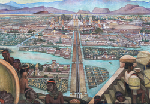

Azteklar imperiyasi
Azteklar imperiyasi XIV-XVI asrlarda hozirgi Meksika hududida mavjud bo'lgan. Ularning poytaxti Tenochtitlan shahri bo'lib, u ko'l ustiga qurilgan va o'z davrining eng yirik shaharlaridan biri edi.
Jamiyat tuzilishi
Azteklar jamiyati qat'iy ierarxik tuzilishga ega bo'lgan. Jamiyat asosan to'rt asosiy tabaqaga bo'lingan: zodagonlar, ruhoniylar, hunarmandlar va dehqonlar.
Madaniyat va din
Azteklar polyteistik din vakillari bo'lib, ko'plab xudolarga sig'inganlar. Ularning eng muhim xudolari Uitsilopochtli (urush xudosi) va Tlalok (yomg'ir xudosi) hisoblangan.
Iqtisodiyot
Azteklar qishloq xo'jaligi va savdo-sotiqda katta yutuqlarga erishganlar. Ular chinampas deb atalgan sun'iy orollardan foydalanib dehqonchilik qilganlar va keng savdo aloqalarini o'rnatganlar.